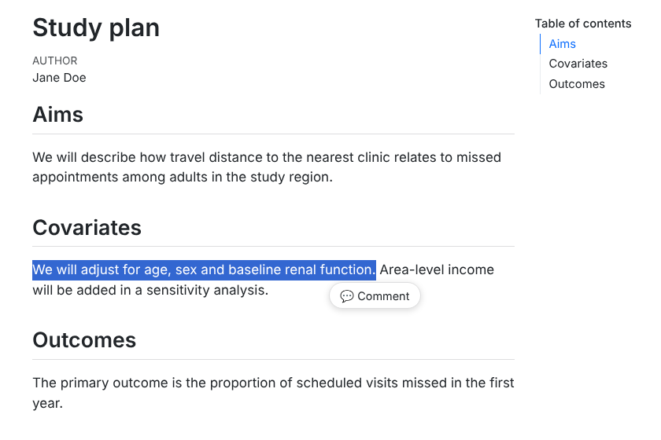
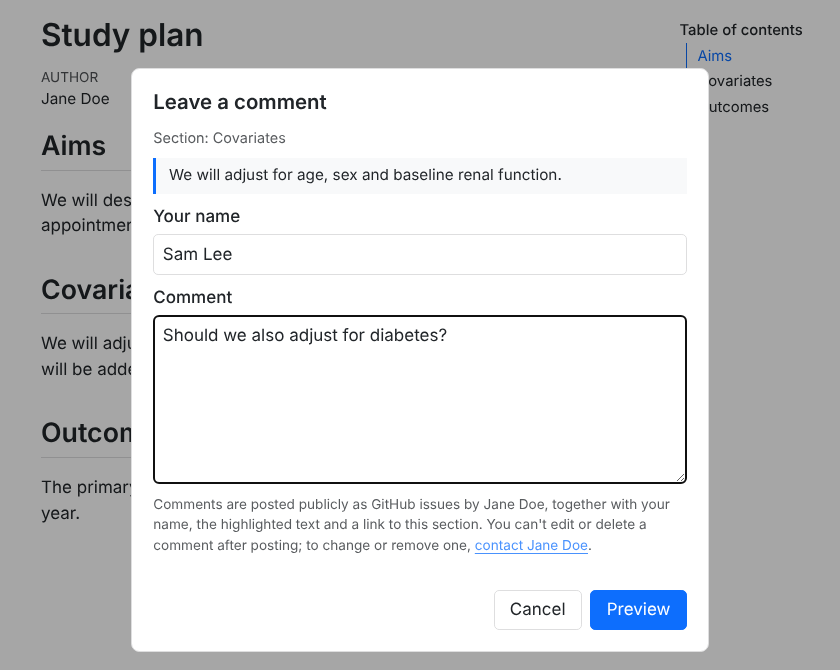
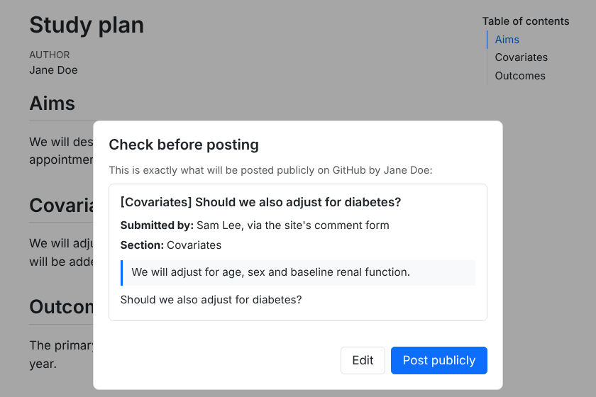
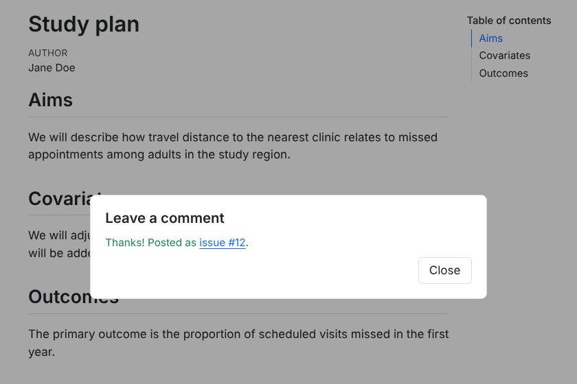
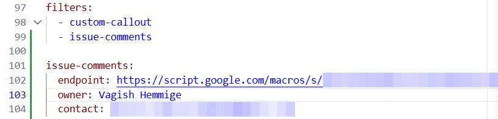
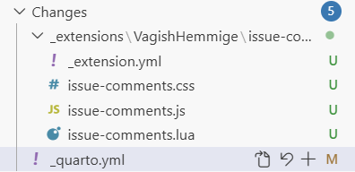

Installation
Setting up commenting takes about ten minutes, once. You need:
- a Quarto website or HTML document published somewhere public (GitHub Pages, Netlify, Quarto Pub, …); PDF and Word output are unaffected;
- a GitHub repository to receive the comments as issues. It doesn’t have to be the site’s own repository;
- a Google account, for the free Apps Script relay that holds your GitHub App’s key.
Steps 2 and 3 are done once. After that, one relay serves every site you add, and another site takes a couple of minutes.
Every test comment becomes a real, public issue. A throwaway repository is the safest place to try it first.
What readers will see
A reader highlights a passage and clicks 💬 Comment:

They type their name and comment, and read who will post it and what becomes public:

They check the issue exactly as it will be posted:

And they get a link to the issue:

The rest of this page sets that up.
1. Install the extension
In a terminal, in your Quarto project’s folder (the one with _quarto.yml), run:
quarto add VagishHemmige/quarto-commenting-extensionAnswer Y when it asks to confirm. It adds the extension under _extensions/. Commit that folder with your site.
2. Create a GitHub App
A GitHub App is a GitHub account that belongs to the relay rather than to you. Issues it creates show as posted by a bot, such as jdoe-comments[bot], so reader comments are easy to tell apart from your own, and GitHub notifies you of them as it would of anyone else’s. The app is allowed to do one thing, work with issues, and only in the repositories you install it on.
- Open GitHub’s form for a new app: https://github.com/settings/apps/new. To get there by clicking instead, use your profile picture → Settings (your account’s settings, not a repository’s), then Developer settings at the bottom of the left sidebar, then GitHub Apps → New GitHub App.
- GitHub App name: something like “jdoe-comments”. The name has to be unused across all of GitHub, and it is what readers’ issues will show as posted by.
- Homepage URL: your site’s address, or your GitHub profile. It is required but not used.
- Webhook: untick Active. The relay only sends to GitHub; it never needs GitHub to call it.
- Permissions → Repository permissions → Issues: choose Read and write. Leave everything else at No access. GitHub adds Metadata: Read-only itself.
- Where can this GitHub App be installed? Choose Only on this account, then click Create GitHub App.
- On the app’s page that opens, note the App ID near the top. Scroll to Private keys and click Generate a private key. A
.pemfile downloads. You will paste its contents into the relay in step 3, and you can then delete the file. - Click Install App in the left sidebar, then Install. Choose Only select repositories, pick the repository that will receive comments, and click Install.
Why so narrow? The relay accepts comments from anyone on the internet, so what the app can do is the limit on any damage. Even if the private key leaked, it could only create and edit issues, as the bot, in the repositories the app is installed on. It could not touch your code or post as you. See Security and privacy.
3. Create the relay in Google Apps Script
The relay is a small script in your own Google account. It holds the app’s key, checks each comment, works out which repository it is for, and creates the issue.
Go to https://script.google.com and click New project. Rename it “issue-comments” by clicking “Untitled project” at the top.
Open
Code.gsas plain text, select all and copy. In the script editor, delete everything inCode.gs, paste, and click the save icon.Click the gear icon (Project Settings) in the left sidebar. Under Script Properties, click Add script property and add:
Property Value GITHUB_APP_IDthe App ID from step 2 GITHUB_APP_KEYthe whole private key: open the .pemfile in a text editor, copy everything including the-----BEGINand-----ENDlines, and paste. It doesn’t matter if the line breaks disappear.GITHUB_OWNERyour GitHub user name. A page at https://<owner>.github.io/<repo>/sends its comments to<owner>/<repo>.PASSCODEoptional: a passcode readers must enter. See Options. Then click Save script properties. If your site is not at
https://<owner>.github.io/<repo>/, also addREPO_MAP(see Options). The other optional properties are there too.Click Deploy → New deployment. Click the gear next to “Select type” and choose Web app. Set Execute as: Me and Who has access: Anyone, and click Deploy.
Authorize when asked. Google says “Google hasn’t verified this app”, because the script is yours rather than a published app. Click Advanced → Go to issue-comments (unsafe), then Allow.
Copy the Web app URL. It starts
https://script.google.com/macros/s/and ends in/exec. To find it again later, use Deploy → Manage deployments. Don’t use a URL ending in/dev.Open the URL in a browser tab. It should show
{"ok":true,"message":"issue-comments relay is running."}.
4. Turn it on in Quarto
Add this to _quarto.yml for the whole site, or to one page’s front matter for just that page, using your /exec URL:
filters:
- issue-comments
issue-comments:
endpoint: https://script.google.com/macros/s/XXXXXXXX/exec
owner: Jane Doe
contact: mailto:jane@example.com
passcode: true # only if you set PASSCODE in step 3Put both at the top level of
_quarto.yml, not underwebsite:orformat:.owneris the name readers are told the issue is posted on behalf of.contactis where they go to change or remove a comment: an email link, a contact page or your GitHub profile.Any wording readers see can be changed with a
text:block; see Options.If you already have a
filters:list, add- issue-commentsto it rather than starting a second one:
Starting with one page is the cautious choice: once it’s on in _quarto.yml, every page shows the Comment button.
5. Publish and test
Render and publish the site the way you usually do. Commit all of the extension’s files with it, not just some:

Then open the published page, highlight a sentence, click 💬 Comment and post. The issue should appear in your repository with the reader-comment label, posted by your app’s bot.
If something doesn’t work
- The dialog says “Comments are not accepted from this page.”
-
The relay couldn’t match the page to a repository the app is installed on. Check that the page’s address is
https://<GITHUB_OWNER>.github.io/<repo>/…(or is inREPO_MAP), and that the app is installed on that repository: profile picture → Settings → Applications → Installed GitHub Apps → Configure. This always happens inquarto preview, whose pages are on your own computer, unless you add the preview address toREPO_MAP; see Options. - The dialog says “That passcode is not correct.”
-
The relay has
PASSCODEset. If the page shows no passcode box, addpasscode: trueto the page’sissue-comments:block. - The dialog says “Something went wrong.”
-
Most often the app:
GITHUB_APP_IDis wrong,GITHUB_APP_KEYis incomplete, or the app lacks Issues: Read and write. The error itself is in Apps Script under Executions. - The dialog says “Commenting is not configured yet.”
-
GITHUB_APP_IDorGITHUB_APP_KEYis missing from Script Properties. - There is no Comment button.
-
Check that
issue-commentsis infilters:, that theissue-comments:block has anendpoint, and that the_extensions/folder is committed if your site is rendered on GitHub. Quarto prints a warning when it renders a page whoseissue-comments:block has noendpoint. - Posting shows an error such as “Failed to fetch”.
-
The page couldn’t reach the relay. Check that
endpointis the/execURL and that the deployment’s access is Anyone.
Adding another site
One relay serves every repository the app is installed on, so a new site needs no new script:
- App. Add the new repository to the app: profile picture → Settings → Applications → Installed GitHub Apps, then Configure next to your app, add the repository under Repository access, and Save.
- Site. Install the extension in the new site (step 1) and turn it on (step 4) with the same
endpoint.
If the new site’s address isn’t https://<GITHUB_OWNER>.github.io/<repo>/, or its comments should go to a different repository than its own, add it to REPO_MAP too.
Moving an older relay to the app
Relays set up before version 0.3.0 posted with a personal token and served one site each. To move one over without changing its /exec URL:
- Create and install the app (step 2), on every repository your sites send comments to.
- In the existing relay’s Script Properties, add
GITHUB_APP_ID,GITHUB_APP_KEYandGITHUB_OWNER(andREPO_MAPif needed). Keep the old ones for now. - Replace the script with the new
Code.gs, save, and use Deploy → Manage deployments → Edit → Version: New version → Deploy. This keeps the URL. - Post a test comment from each site. Once they work, delete
GITHUB_TOKEN,GITHUB_REPOandSITE_PREFIXfrom Script Properties, and revoke the old token on GitHub under Developer settings → Personal access tokens. - Sites that had their own relays can switch their
endpointto this one. Then delete the extra Apps Script projects.